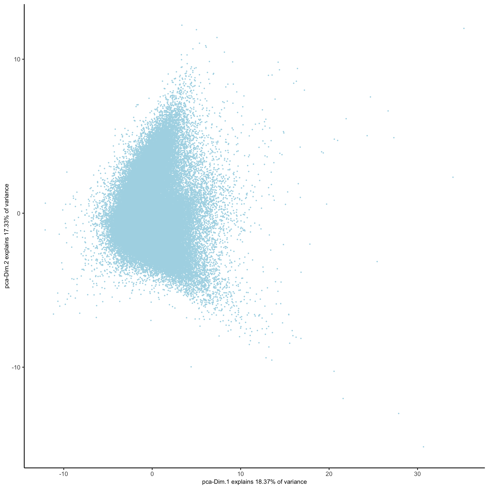
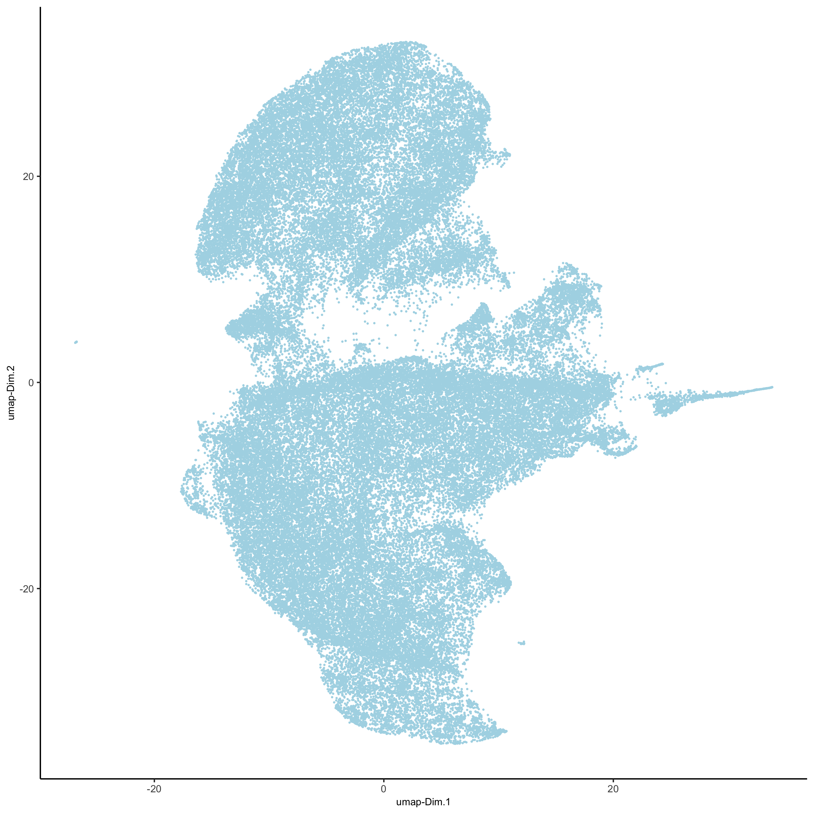
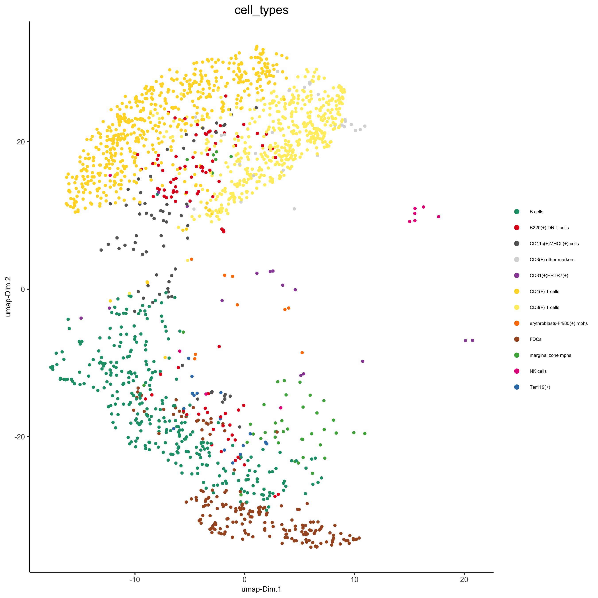
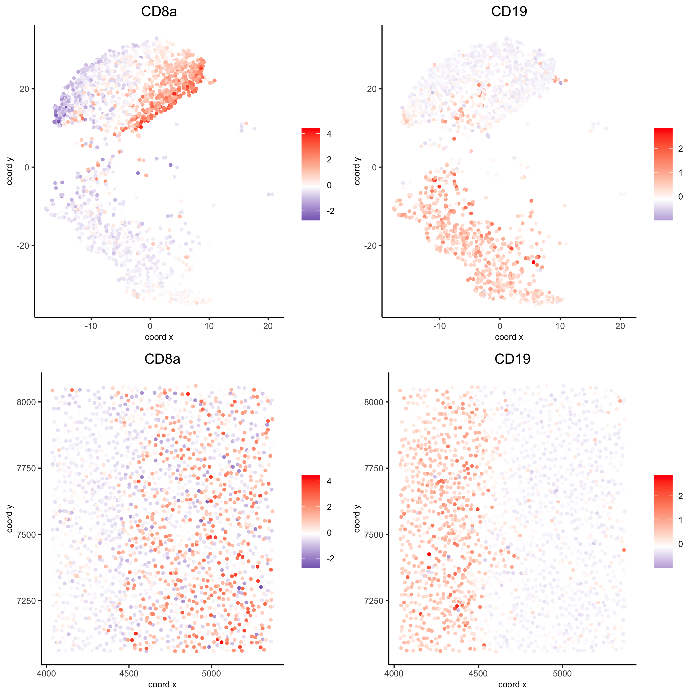
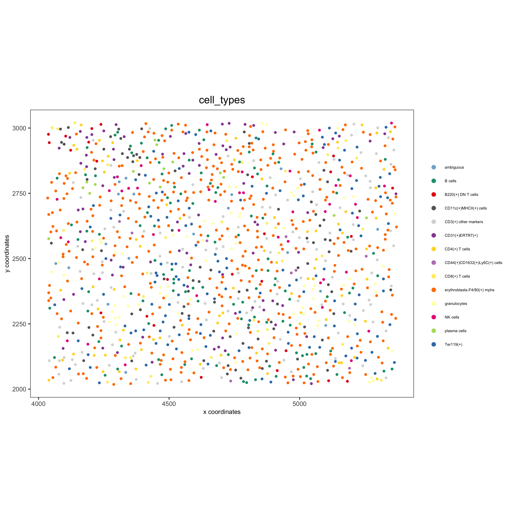

#> Warning: This tutorial was written with Giotto version 0.3.6.9048, your version
#> is 1.0.4.This is a more recent version and results should be reproducible
library(Giotto)
# 1. set working directory
results_folder = '/path/to/directory/'
# 2. set giotto python path
# set python path to your preferred python version path
# set python path to NULL if you want to automatically install (only the 1st time) and use the giotto miniconda environment
python_path = NULL
if(is.null(python_path)) {
installGiottoEnvironment()
}Dataset explanation
The CODEX data to run this tutorial can be found here Alternatively you can use the getSpatialDataset to automatically download this dataset like we do in this example.
Goltsev et al. created a multiplexed datasets of normal and lupus (MRL/lpr) murine spleens using CODEX technique. The dataset consists of 30 protein markers from 734,101 single cells. In this tutorial, 83,787 cells from sample “BALBc-3” were selected for the analysis.
Dataset download
# download data to working directory
# use method = 'wget' if wget is available. This should be much faster.
# if you run into authentication issues with wget, then add " extra = '--no-check-certificate' "
getSpatialDataset(dataset = 'codex_spleen', directory = results_folder, method = 'wget')Part 1: Giotto global instructions and preparations
# 1. (optional) set Giotto instructions
instrs = createGiottoInstructions(show_plot = FALSE,
save_plot = TRUE,
save_dir = results_folder,
python_path = python_path)
# 2. create giotto object from provided paths ####
expr_path = paste0(results_folder, "codex_BALBc_3_expression.txt.gz")
loc_path = paste0(results_folder, "codex_BALBc_3_coord.txt")
meta_path = paste0(results_folder, "codex_BALBc_3_annotation.txt")Part 2: Create Giotto object & process data
# read in data information
# expression info
codex_expression = readExprMatrix(expr_path, transpose = F)
# cell coordinate info
codex_locations = data.table::fread(loc_path)
# metadata
codex_metadata = data.table::fread(meta_path)
## stitch x.y tile coordinates to global coordinates
xtilespan = 1344;
ytilespan = 1008;
# TODO: expand the documentation and input format of stitchTileCoordinates. Probably not enough information for new users.
stitch_file = stitchTileCoordinates(location_file = codex_metadata, Xtilespan = xtilespan, Ytilespan = ytilespan);
codex_locations = stitch_file[,.(Xcoord, Ycoord)]
# create Giotto object
codex_test <- createGiottoObject(raw_exprs = codex_expression,
spatial_locs = codex_locations,
instructions = instrs,
cell_metadata = codex_metadata)
# subset Giotto object
cell_meta = pDataDT(codex_test)
cell_IDs_to_keep = cell_meta[Imaging_phenotype_cell_type != "dirt" & Imaging_phenotype_cell_type != "noid" & Imaging_phenotype_cell_type != "capsule",]$cell_ID
codex_test = subsetGiotto(codex_test, cell_ids = cell_IDs_to_keep)
## filter
codex_test <- filterGiotto(gobject = codex_test,
expression_threshold = 1,
gene_det_in_min_cells = 10,
min_det_genes_per_cell = 2,
expression_values = c('raw'),
verbose = T)
codex_test <- normalizeGiotto(gobject = codex_test, scalefactor = 6000, verbose = T,
log_norm = FALSE,library_size_norm = FALSE,
scale_genes = FALSE, scale_cells = TRUE)
## add gene & cell statistics
codex_test <- addStatistics(gobject = codex_test,expression_values = "normalized")
## adjust expression matrix for technical or known variables
codex_test <- adjustGiottoMatrix(gobject = codex_test,
expression_values = c('normalized'),
batch_columns = NULL,
covariate_columns = NULL,
return_gobject = TRUE,
update_slot = c('custom'))
## visualize
spatPlot(gobject = codex_test,point_size = 0.1,
coord_fix_ratio = NULL,point_shape = 'no_border',
save_param = list(save_name = '2_a_spatPlot'))
spatPlot(gobject = codex_test, point_size = 0.2,
coord_fix_ratio = 1, cell_color = 'sample_Xtile_Ytile',
legend_symbol_size = 3,legend_text = 5,
save_param = list(save_name = '2_b_spatPlot'))
Part 3: Dimension reduction
# use all Abs
# PCA
codex_test <- runPCA(gobject = codex_test, expression_values = 'normalized', scale_unit = T, method = "factominer")
signPCA(codex_test, scale_unit = T, scree_ylim = c(0, 3),
save_param = list(save_name = '3_a_spatPlot'))
plotPCA(gobject = codex_test, point_shape = 'no_border', point_size = 0.2,
save_param = list(save_name = '3_b_PCA'))
# UMAP
codex_test <- runUMAP(codex_test, dimensions_to_use = 1:14, n_components = 2, n_threads = 12)
plotUMAP(gobject = codex_test, point_shape = 'no_border', point_size = 0.2,
save_param = list(save_name = '3_c_UMAP'))
Part 4: Cluster
## sNN network (default)
codex_test <- createNearestNetwork(gobject = codex_test, dimensions_to_use = 1:14, k = 20)
## 0.1 resolution
codex_test <- doLeidenCluster(gobject = codex_test, resolution = 0.5, n_iterations = 100, name = 'leiden',python_path = python_path)
codex_metadata = pDataDT(codex_test)
leiden_colors = Giotto:::getDistinctColors(length(unique(codex_metadata$leiden)))
names(leiden_colors) = unique(codex_metadata$leiden)
plotUMAP(gobject = codex_test,
cell_color = 'leiden', point_shape = 'no_border', point_size = 0.2, cell_color_code = leiden_colors,
save_param = list(save_name = '4_a_UMAP'))
spatPlot(gobject = codex_test, cell_color = 'leiden', point_shape = 'no_border', point_size = 0.2,
cell_color_code = leiden_colors, coord_fix_ratio = 1,label_size =2,
legend_text = 5,legend_symbol_size = 2,
save_param = list(save_name = '4_b_spatplot'))
Part 5: Co-visualize
spatDimPlot2D(gobject = codex_test, cell_color = 'leiden', spat_point_shape = 'no_border',
spat_point_size = 0.2, dim_point_shape = 'no_border', dim_point_size = 0.2,
cell_color_code = leiden_colors,plot_alignment = c("horizontal"),
save_param = list(save_name = '5_a_spatdimplot'))
Part 6: Differential expression
# resolution 0.5
cluster_column = 'leiden'
markers_scran = findMarkers_one_vs_all(gobject=codex_test, method="scran",
expression_values="norm", cluster_column=cluster_column, min_genes=3)
markergenes_scran = unique(markers_scran[, head(.SD, 5), by="cluster"][["genes"]])
plotMetaDataHeatmap(codex_test, expression_values = "norm", metadata_cols = c(cluster_column),
selected_genes = markergenes_scran,
y_text_size = 8, show_values = 'zscores_rescaled',
save_param = list(save_name = '6_a_metaheatmap'))
topgenes_scran = markers_scran[, head(.SD, 1), by = 'cluster']$genes
violinPlot(codex_test, genes = unique(topgenes_scran)[1:8], cluster_column = cluster_column,
strip_text = 8, strip_position = 'right',
save_param = list(save_name = '6_b_violinplot'))
# gini
markers_gini = findMarkers_one_vs_all(gobject=codex_test, method="gini", expression_values="norm",
cluster_column=cluster_column, min_genes=5)
markergenes_gini = unique(markers_gini[, head(.SD, 5), by="cluster"][["genes"]])
plotMetaDataHeatmap(codex_test, expression_values = "norm",
metadata_cols = c(cluster_column), selected_genes = markergenes_gini,
show_values = 'zscores_rescaled',
save_param = list(save_name = '6_c_metaheatmap'))
topgenes_gini = markers_gini[, head(.SD, 1), by = 'cluster']$genes
violinPlot(codex_test, genes = unique(topgenes_gini), cluster_column = cluster_column,
strip_text = 8, strip_position = 'right',
save_param = list(save_name = '6_d_violinplot'))
Part 7: Cell type annotation
clusters_cell_types = c('erythroblasts-F4/80(+) mphs','B cells','CD8(+) T cells',
'CD4(+) T cells', 'B cells','CD11c(+)MHCII(+) cells',
'CD4(+) T cells','Ter119(+)', 'marginal zone mphs',
'CD31(+)ERTR7(+)', 'FDCs', 'B220(+) DN T cells',
'CD3(+) other markers','NK cells','granulocytes',
'plasma cells','ambiguous','CD44(+)CD1632(+)Ly6C(+) cells')
names(clusters_cell_types) = c(1:18)
codex_test = annotateGiotto(gobject = codex_test, annotation_vector = clusters_cell_types,
cluster_column = 'leiden', name = 'cell_types')
plotMetaDataHeatmap(codex_test, expression_values = 'scaled',
metadata_cols = c('cell_types'),y_text_size = 6,
save_param = list(save_name = '7_a_metaheatmap'))
# create consistent color code
mynames = unique(pDataDT(codex_test)$cell_types)
mycolorcode = Giotto:::getDistinctColors(n = length(mynames))
names(mycolorcode) = mynames
plotUMAP(gobject = codex_test, cell_color = 'cell_types',point_shape = 'no_border', point_size = 0.2,
cell_color_code = mycolorcode,
show_center_label = F,
label_size =2,
legend_text = 5,
legend_symbol_size = 2,
save_param = list(save_name = '7_b_umap'))
spatPlot(gobject = codex_test, cell_color = 'cell_types', point_shape = 'no_border', point_size = 0.2,
cell_color_code = mycolorcode,
coord_fix_ratio = 1,
label_size =2,
legend_text = 5,
legend_symbol_size = 2,
save_param = list(save_name = '7_c_spatplot'))
part 8: Visualize cell types and gene expression in selected zones
cell_metadata = pDataDT(codex_test)
subset_cell_ids = cell_metadata[sample_Xtile_Ytile=="BALBc-3_X04_Y08"]$cell_ID
codex_test_zone1 = subsetGiotto(codex_test, cell_ids = subset_cell_ids)
plotUMAP(gobject = codex_test_zone1,
cell_color = 'cell_types', point_shape = 'no_border', point_size = 1,
cell_color_code = mycolorcode,
show_center_label = F,
label_size =2,
legend_text = 5,
legend_symbol_size = 2,
save_param = list(save_name = '8_a_umap'))
spatPlot(gobject = codex_test_zone1,
cell_color = 'cell_types', point_shape = 'no_border', point_size = 1,
cell_color_code = mycolorcode,
coord_fix_ratio = 1,
label_size =2,
legend_text = 5,
legend_symbol_size = 2,
save_param = list(save_name = '8_b_spatplot'))
spatDimGenePlot(codex_test_zone1,
expression_values = 'scaled',
genes = c("CD8a","CD19"),
spat_point_shape = 'no_border',
dim_point_shape = 'no_border',
cell_color_gradient = c("darkblue", "white", "red"),
save_param = list(save_name = '8_c_spatdimplot'))
cell_metadata = pDataDT(codex_test)
subset_cell_ids = cell_metadata[sample_Xtile_Ytile=="BALBc-3_X04_Y03"]$cell_ID
codex_test_zone2 = subsetGiotto(codex_test, cell_ids = subset_cell_ids)
plotUMAP(gobject = codex_test_zone2, cell_color = 'cell_types',point_shape = 'no_border', point_size = 1,
cell_color_code = mycolorcode,
show_center_label = F,
label_size =2,
legend_text = 5,
legend_symbol_size = 2,
save_param = list(save_name = '8_d_umap'))
spatPlot(gobject = codex_test_zone2, cell_color = 'cell_types', point_shape = 'no_border', point_size = 1,
cell_color_code = mycolorcode,
coord_fix_ratio = 1,
label_size =2,
legend_text = 5,
legend_symbol_size = 2,
save_param = list(save_name = '8_e_spatPlot'))
spatDimGenePlot(codex_test_zone2,
expression_values = 'scaled',
genes = c("CD4", "CD106"),
spat_point_shape = 'no_border',
dim_point_shape = 'no_border',
cell_color_gradient = c("darkblue", "white", "red"),
save_param = list(save_name = '8_f_spatdimgeneplot'))